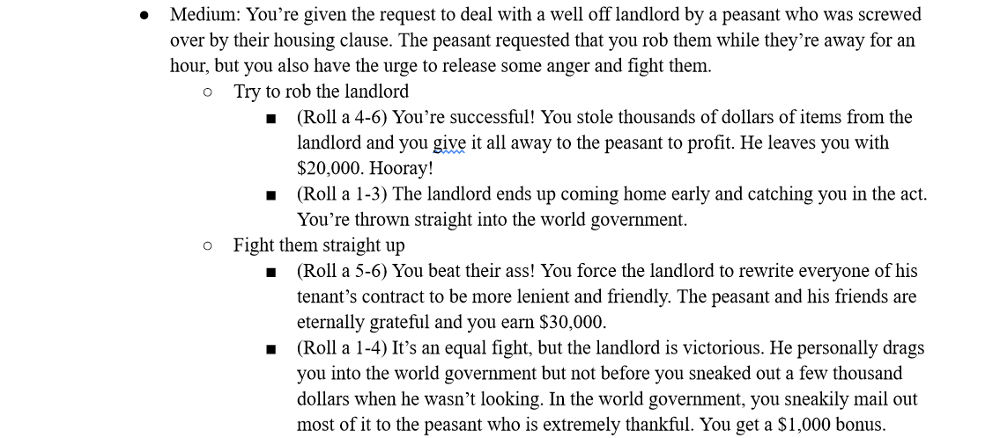

Crab Bucket
Crab Bucket: A board game I developed with Sam Good, Skyler Rickard, and original idea pitcher Collin Brooks, during my CTK 351 class. It was considered both project 1 & 3 in that class. Crab Bucket is a 4-8 player competitive party game that is mechanics-based, but contains with surrounding lore. You play as a crab ascending a bucket on a boat, and you can team up with/attack the other players as you all try to be first out the bucket. Every turn you perform a basic movement or action, and then play a movement card and action card, of which we made 10 and 19 different types respectively. 8 characters to play as, 69 cards to have in your hand, and 37 endings to discover, no game will ever be the same!
I was heavily involved in both the mechanics and story of the project. In terms of mechanics: all of the movement/action card ideas were bounced off each member of the team, so I had direct input on how the gameplay was shaped. I also physically wrote a big portion of the cards themselves in our class prototype. The biggest contribution I had to the project would be the writing. I helped write both the rule book and specific card rules, character biographies for over half the crabs, and I singlehandedly wrote 37 endings for the game, fleshing it out story-wise and giving it a lot more character. Me and the team are very proud of the game and, thanks to the school of CTK, got to comission a few higher quality copies of the game using Gamecrafter and art all drawn by Skyler and Collin.


Treasure Hunt
Treasure Hunt is a board game I developed in my CTK 351 class alongside Joseph Prestipino, Justin Yang, and original pitcher Tyler Hamilton. It's a 2-4 player game where you play as a pirate in search of treasure. You can fight other players or take part in stories where you choose the outcome. It counted as project 2 in class.
Tyler handeled a ton of the initial creative ideas of theming and characters, so my role was more about helping implement story mechanics into the game, as at first there was more of a focus on gameplay, and the assignment in class was to have a focus on story for the project. Me and my teammates came up with the idea to have these story sections where you choose a story quest to go on. These had multiple paths and results were decided by both player choice and luck of a dice roll. I wrote multiple of these. I also helped to clean up the rule book for the project. Insert the 3rd number of paragraph 3.